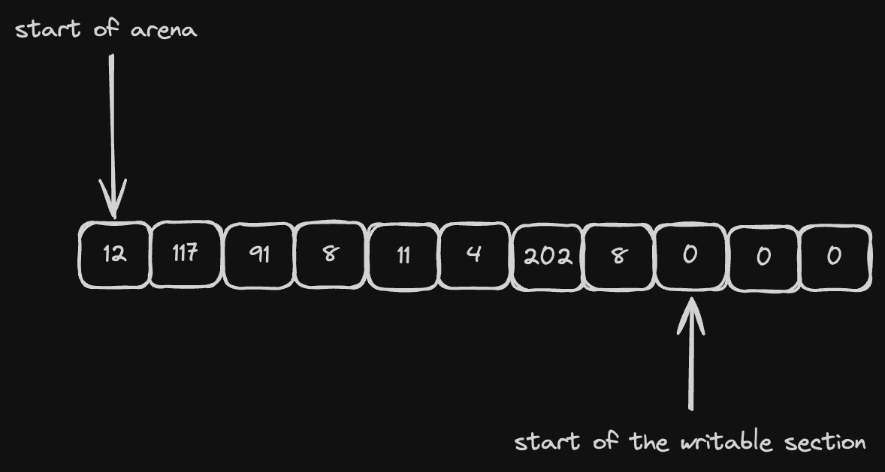
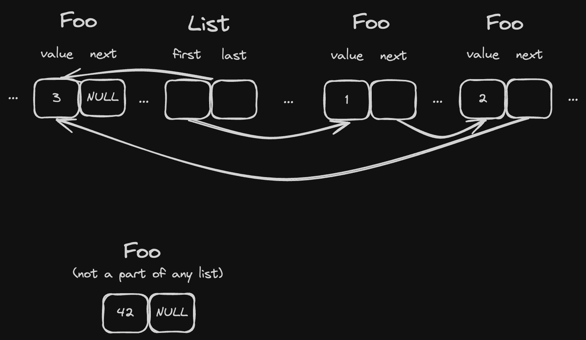
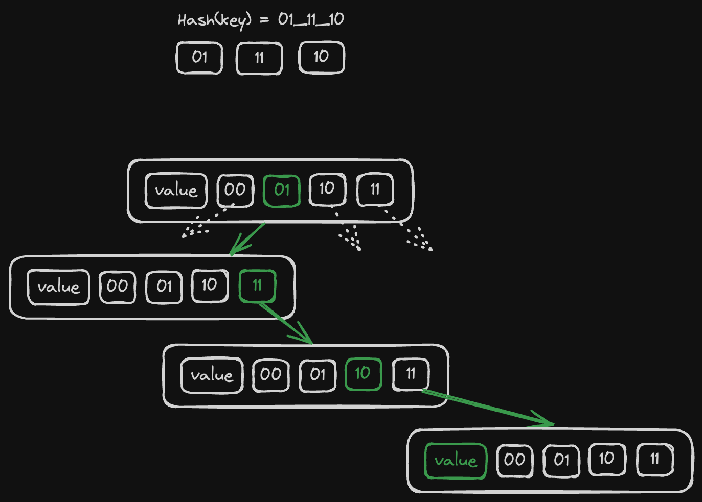

TL;DR
This micro-book is about parsers, memory allocations and arenas.
- The parser is written in Rust, it parses code in Ruby. You don't need to know both though.
- The change that I'm describing here made a parser that I created in the past to go from 37MB/s to 80MB/s (which is roughly a 2x improvement)
- I was able to completely eliminate all heap allocations (the parser is written in Rust, so it runs in
#[no_std]mode) - Result of the parsing is located exclusively on arena, so the whole blob of underlying memory can be written on disk and later
mmap-ed to quickly get it back if needed, so AST caching is significantly easier.
The code is a bit "experimental" but it's available in the arena-fixes branch (make sure to enable --features=development if you run it from a Git repo).
I am not going to release it. If you need a Ruby parser better try prism (it has Rust bindings that are available on crates.io). This whole story is more like an experiment to see if it's worth doing this type of work.
What is arena allocator
An allocator is a library that allows your program to dynamically allocate and release memory.
These days most widely used allocator are global, i.e. they are configured once for the whole program and they provide functions like malloc, free (and possibly some optimised versions of calloc and friends) for memory management. You might've heard of some of them:
glibcallocatorjemalloctcmallocmimalloc
They all have their own unique properties (general availability/specific performance traits/better tracing/etc) but they all share something in common: they are globally set. You can't easily "swap" allocators at runtime unless your code is written specifically to support it (like it's done in Zig for example).
Arena allocators on the other side are usually "local" to your code, i.e. they have to be passed explicitly to the code that wants to allocate a chunk of memory.
A single arena allocator holds a reference to (usually a single) pre-defined raw blob of memory. It can point to a heap-allocated vector or to a stack-allocated array, it really doesn't matter. As a result our malloc and free functions are somewhat special:
mallocsimply "cuts" requested amount of memory from the blobfreeis not even needed, the memory is automatically released once the blob is deleted

So to allocate a struct that takes N bytes we need to:
- add N to our write pointer
- return
write pointer - N(initial value)
Of course it also requires alignment handling but for now it's out of scope. It will be covered later in the implementation section.
To release memory we simply release the blob itself, so it's like a batched deallocation, sort of. The consequence here is that all of our types must be:
- trivially copyable (
: Copyif we speak in Rust) - trivially destructible (i.e. they can't have
impl Drop)
Both of this constraints are fine for my use-case.
Intrusive data structures
What if our program needs to allocate more that just numbers and sequences of numbers? In my library I need at least:
- single linked lists (for append-only lists of AST nodes)
- double linked lists (for some internal data structures that can be extended both ways via
{push,pop}_{back,front}) - hashmaps (to handle things like a set of local variables better-than-in-
O(N)) - dynamic consecutive arrays (for all kinds of strings)
This is the place where things get complicated.
Let's say we have a single linked list that is (somehow?) allocated on arena and we want to push existing arena-allocated value to this list. If it's written in a traditional way that would be something like
#![allow(unused)] fn main() { struct List<T> { head: *mut ListNode<T>, tail: *mut ListNode<T>, } struct ListNode<T> { value: T, next: *mut ListNode<T>, } }
where T can be literally anything, and *mut T points to some place on arena where T is located. There's one problem though: T must be a part of the ListNode and so when we append it to a list we are force to either:
- allocate a new
ListNodeand copyTinto it - embed a pointer to
*const TinListNodeinstead of theTitself
The former is not only slow in some cases (if T is big enough) but also requires singnificantly more memory, because every time we push T we consume sizeof(T) memory of arena.
The latter introduces an unnecessary level of indirection that makes lookups slower (because we need to go through another pointer every time we read a list item).
Here comes a solution: intrusive data structures.
Elements of intrusive data structures know that they belongs to a certain structure.
Yes, when I explained this concept to my friend his first impression was "wait, but it strongly violates encapsulation". And yes, he was absolutely correct, but that's the point.
Not every T can become an element of a single-linked intrusive list, only those that have some extra data fields that List<T> expects.
Single linked list
For T to be an element of a single linked list it must store a pointer to next inside of T:
#![allow(unused)] fn main() { struct Foo { value: i32, next: Cell<Option<NonNull<Foo>>> } }
Cellhere allows us to have interior mutability and modify its value via aconstreferenceOption<NonNull<T>>is just a safer way to have*mut T: we have to explicitly check forNoneinstead ofis_null()
And the list could look like this:
#![allow(unused)] fn main() { struct SingleLinkedIntrusiveList<'b, T> where T: SingleLinkedIntrusiveListItem, { first: Cell<Option<NonNull<T>>>, last: Cell<Option<NonNull<T>>>, _marker: core::marker::PhantomData<&'b ()>, } }
where:
'bis the lifetime of our arena. It shouldn't be possible for any arena-allocated structure to outlive the memory that it's located on.T: SingleLinkedIntrusiveListItemis our constraint for elements of the list
#![allow(unused)] fn main() { trait SingleLinkedIntrusiveListItem { fn next(&self) -> Option<NonNull<Self>>; fn set_next(&self, new_next: Option<NonNull<Self>>); } impl SingleLinkedIntrusiveListItem for Foo { fn next(&self) -> Option<NonNull<Self>> { self.next.get() } fn set_next(&self, new_next: Option<NonNull<Self>>) { self.next.set(new_next) } } }
Operations like .push(&'b Foo) and .pop() are the same as for the "standard" linked list, but instead of writing .next to List elements we write them straight to T using .set_next().

As a result, any T: SingleLinkedIntrusiveListItem:
- can be added to any existing list at any time, and this operation doesn't require any additional memory.
- can belong only to a single linked list. This requires a note that lists can "embed" each other and then elements can be "shared" (because their
nextpointer remains the same for both lists), and so operations likelist1.concat(list2)can be easily implemented with no copying.
Double linked list
It's almost the same as our single linked lists, except that we need to have another constraint for T:
#![allow(unused)] fn main() { trait DoubleLinkedIntrusiveListItem { fn prev(&self) -> Option<NonNull<Self>>; fn set_prev(&self, new_prev: Option<NonNull<Self>>); fn next(&self) -> Option<NonNull<Self>>; fn set_next(&self, new_next: Option<NonNull<Self>>); } }
and so to have a list of numbers our supplementary data structure must look like this:
#![allow(unused)] fn main() { struct IntrusiveNumber { n: u64, prev: Cell<Option<NonNull<Self>>>, next: Cell<Option<NonNull<Self>>>, } impl DoubleLinkedIntrusiveListItem for IntrusiveNumber { fn prev(&self) -> Option<NonNull<Self>> { self.prev.get() } fn set_prev(&self, new_prev: Option<NonNull<Self>>) { self.prev.set(new_prev) } fn next(&self) -> Option<NonNull<Self>> { self.next.get() } fn set_next(&self, new_next: Option<NonNull<Self>>) { self.next.set(new_next) } } }
It might sound like it requires too much memory and in the case of a number that's probably true. However I only need it for some internal data structures that are allocated on the scratch arena.
It's possible to slightly reduce memory usage by using relative offsets.
Hashmaps
Hashmaps are more complex but what's important I only need something like a HashSet<&str> so the data structure doesn't really need to be intrusive. However, it should be arena-friendly and it must require 0 heap allocations.
I took inspiration from this blog post (I highly recommend to go and read it, it explains this concept much better than me), the idea is that we'll pack our hash table as a tree where each node has 4 nullable children:
#![allow(unused)] fn main() { struct ArenaHashMap<'b, K, V> where K: Copy + SimpleHash + PartialEq + 'b, V: Copy + 'b, { children: UnsafeCell<[*const Self; 4]>, key: Cell<Option<K>>, value: Cell<V>, _marker: core::marker::PhantomData<&'b ()>, prev: Cell<Option<NonNull<Self>>>, next: Cell<Option<NonNull<Self>>>, } trait SimpleHash { fn simple_hash(self) -> usize; } }
- again, our
ArenaHashMapcan't outlive the blob that lives for'b - I want it to store either primitives or arena-allocated references, so keys and values should be
Copy - instead of using
core::hash::HashI decided to go with a simpler custom trait that just returns a plain number as a hashsum. Now I can easily implement it for&strand keep things simple.
Each node has 4 children and when we compute the hash of K we break it down to groups of 2 bits (that's 4 distinct values, that's why we have 4 children) and literally take a route from the root to the leaf that matches our byte groups. If some parts of the path do not exist we construct them on-the-fly.

So on each iteration we:
- look at
children[h >> 62] - do
h <<= 2before jumping to the next iteration - we exit either once we reach an empty slot (then it's a new key), or once we get an existing node with the same hash + key.
If it's an existing slot we check for collision by comparing a key stored in the slot with the key that we insert and if they are not equal we just keep looping and creating new leafs. At the end it looks like a linked list with all key/value pairs having the same hash (visually this list goes "down" from a leaf node of the tree like an icicle. Well, technically it's also a part of the tree).
#![allow(unused)] fn main() { unsafe fn insert_unsafe(mut node: *mut *const Self, key: K, value: V) { let mut h = key.simple_hash(); while let Some(node_ref) = (*node).as_ref() { if Some(key) == node_ref.key.get() { node_ref.value.set(value); return; } let children = UnsafeCell::raw_get(&node_ref.children) .as_mut() .unwrap(); node = &mut children[h >> 62]; h <<= 2; } *node = allocate_on_blob::<Self>(); (**node).key.set(Some(key)); (**node).value.set(value); } fn insert(hashmap: &mut &Self, key: K, value: V) { let root_node: *mut *const Self = unsafe { core::mem::transmute(hashmap) }; unsafe { Self::insert_unsafe(root_node, key, value) }; } }
allocate_on_blob here is just a stub for simplicity, I'll cover it one of the next chapters.
Lookup is trivial to implement, it has the same logic of iterating but returns an Option<V> instead of mutating.
Dynamic consecutive arrays
This is an easy one, it has the same API as the built-in std::vec::Vec<T>:
#![allow(unused)] fn main() { struct ByteArray<'b> { ptr: Cell<*mut u8>, len_in_bytes: Cell<usize>, capacity_in_bytes: Cell<usize>, marker: core::marker::PhantomData<&'b ()>, } }
Implementing methods like .grow(), .push() and .pop() is easy, you can use standard vec as a reference implementation.
Allocator implementation
This is the heart of the whole story.
We want to have some data structure that:
- encapsulates a raw pointer + size behind it
- keeps track of where we have stopped writing
- has interior mutability for the write pointer
- allows to allocate (via const ref) a chunk of
Nbytes and moves the write pointer
Also we need to be careful with alignment, we do support byte arrays that can reserve 2 ^ N bytes, but most of our data structures have alignment 8 (because most of them encpsulate pointers of some kind).
Here to simplify things we can introduce a simple (but reasonable) requirement: the region of memory that we take in control must be 8-byte-aligned (i.e. it should be a *mut usize), and there should be no way for us to access it as blob of bytes.
#![allow(unused)] fn main() { struct Blob<'b> { ptr: *mut usize, len: Cell<usize>, capacity: usize, _marker: core::marker::PhantomData<&'b ()>, } impl<'b> From<&'b mut [usize]> for Blob<'b> { fn from(slice: &'b mut [usize]) -> Self { Self { ptr: slice.as_mut_ptr(), len: Cell::new(0), capacity: slice.len(), _marker: core::marker::PhantomData, } } } }
The blob can only be constructed from a slice of usize (e.g. from a stack allocated array [usize; N] or from heap-allocated vec.as_mut_slice()). Then allocations becomes much simpler:
#![allow(unused)] fn main() { use core::mem::{size_of, align_of}; fn write_ptr(&self) -> *mut usize { unsafe { self.ptr.add(self.len.get()) } } fn alloc_uninitialized<T>(&self) -> NonNull<T> { assert_eq!(size_of::<T>() % size_of::<usize>(), 0); assert_eq!(align_of::<T>(), size_of::<usize>()); let ptr = self.write_ptr(); let count = size_of::<T>() / size_of::<usize>(); self.assert_has_space_for_extra_words(count); self.len.set(self.len.get() + count); unsafe { NonNull::new_unchecked(ptr as *mut _) } } fn assert_has_space_for_extra_words(&self, required_words: usize) { let left = self.capacity - self.len.get(); assert!( required_words <= left, "OOM error: can't allocate {} words, only {} has left", required_words, left ); } }
So instead of operating on *const u8 we use *const usize and thus we can always be sure that our pointer is properly aligned.
Bytes allocation (for ByteArray) requires some rounding though:
#![allow(unused)] fn main() { pub fn push_bytes(&self, bytes: &[u8]) -> &'b [u8] { let len_in_words = bytes.len().next_multiple_of(size_of::<usize>()) / size_of::<usize>(); self.assert_has_space_for_extra_words(len_in_words); let ptr = self.write_ptr(); unsafe { core::ptr::copy_nonoverlapping::<u8>( bytes.as_ptr(), self.write_ptr().cast(), bytes.len(), ) }; self.len.set(self.len.get() + len_in_words); unsafe { core::slice::from_raw_parts(ptr.cast(), bytes.len()) } } }
So if we need to write 10 bytes we write 16. The pointer is 8-byte-aligned before and after writing.
Once we have these primitives we need to make decision on how our data structures must be initialized:
- we can enforce the underlying memory of the blob to be always zero-initialized (and
panic!if it's not true), then those data structures that support zero initialization can be allocated as is, viablob.alloc_uninitialized::<T>() - we can add an explicit constructor to each structure that allocates on a blob and initializes acquired region with the default state
I went with the second option, this way the array can be re-used between parser runs with no extra computations:
let mut mem = [0; 1000];
for file in files {
let blob = Blob::from(&mut mem);
parse(file.content, &blob);
}
However it requires some extra code in each struct, and Blob::alloc_uninitialized must be explicitly marked as a private function so that no code accidentally calls it:
#![allow(unused)] fn main() { impl ArenaAllocatedStruct { // Having a dedicated method allows other structs // to "embed" it and still have ability to // initialize it with default fields. // // This could also be `impl Default` of course. fn new_in_place() -> Self { Self { // ... } } fn new_in(blob: &Blob<'b>) -> &'b Self { let this: &'b mut Self = blob.alloc_uninitialized(); *this = Self::new_in_place(); this } } }
AST nodes
Before and after the change AST nodes were represented as a sum type of all possible variants. There's quite a lot of them.
For example, an ArrayNode that represents the following code
[1, "foo", 42]
previously had roughly the following structure:
#![allow(unused)] fn main() { pub struct ArrayNode { pub elements: Vec<Node>, pub begin_l: Option<Loc>, pub end_l: Option<Loc>, pub expression_l: Loc, } struct Loc { pub begin: usize, pub end: usize } enum Node { ArrayNode(ArrayNode), // ... other 100+ variants } }
Now it's fully arena-allocated:
#![allow(unused)] fn main() { pub struct ArrayNode<'b> { pub elements: &'b List<'b, Node<'b>>, pub begin_l: Option<Loc>, pub end_l: Option<Loc>, pub expression_l: Loc, next: Cell<Option<NonNull<Node<'b>>>>, } enum Node<'b> { ArrayNode(ArrayNode<'b>), // ... other 100+ variants } }
It's still possible to access fields and match on a node, however you can no longer pattern match on it without specify the .. pattern in the fields list (as if it's been marked as #[non_exhaustive])
Also, to simplify instantiation of node I had to change builder functions. Previously I was able to construct any node from any place, but now there's a next pointer to support embedding a node in a List<Node>.
I came up with the following solution:
#![allow(unused)] fn main() { impl<'b> ArrayNode<'b> { fn new_in<F>(blob: &'b Blob<'b>, f: F) -> &'b Node<'b> where F: FnOnce(&mut Self), { let mut uninit = MaybeUninit::<Self>::zeroed(); let mut_ref = unsafe { &mut *uninit.as_mut_ptr() }; // .. initialize required fields on mut_ref // of types like List<T> or ByteArray mut_ref.elements = List::new_in(blob); let mut variant = unsafe { uninit.assume_init() }; f(&mut variant); let node = blob.alloc_uninitialized_mut::<Node>(); *node = Node::ArrayNode(variant); node } } }
This way I can temporarily get access to the inner variant in a mutable fashion and get back at the end a wrapped const Node reference, which doesn't violate the rule of Rust of having no overlapping references in a single context:
#![allow(unused)] fn main() { let node: &Node = ArrayNode::new_in(blob, |array| { array.elements.push(child1, blob); array.elements.push(child2, blob); array.elements.push(child3, blob); array.begin_l = Some(Loc::new(...)); array.end_l = Some(Loc::new(...)); array.expression_l = Loc::new(...); }); }
#![no_std]
To make sure that there's not even a single allocation anywhere in the code the easiest solution is to enable a #![no_std] crate-level flag.
Luckily there are multiple "modules" in the parser library that can be migrated independently:
- AST library. This is a separate crate that contains types of AST nodes and all kinds of parsing errors. Now it also comes with all of the arena-related data structures that I mentioned before, and I was able to add both the new and the old versions of this library to the root parser crate.
- Lexer (or tokenizer if you prefer). An iterator-like object that returns tokens, one by one. I wished it shared less state with the parser, but it's Ruby. I was able to gradually make small parts
no_std-compatible, one step at a time. - Diagnostic messages, this is the module that reports errors/warnings, and it's pretty self-contained. I slowly migrated it to use the version of the AST library and allocate everything on arena.
- The parser itself. This was the biggest all-or-nothing change, took me almost a week.
- Unit tests. I'm using file-based fixtures, for each of them there's a unit test that reads it from the disk, parses it to split input vs expected output and runs the parser. That was also a relatively easy change.
std::fs::readis nowinclude_bytes!, so no FS logic is needed.
Low-level parts related to arena have been fully tested with miri, and their interfaces are safe, so migration overall was easy. If you have safe and stable primitives as your building bricks migration becomes mostly mechanical work.
From some POV no_std is an insanely strict requirement for the code that probably is going to run on a full std environment anyway. However I don't see any other way to keep track of allocations other that providing a custom global Allocator that panic!-s at runtime if you try to allocate. Honestly, I prefer a compile-time error here.
Benchmarks
For benchmarks I've made a script that downloads top 300 Ruby libraries (by total downloads) and unpacks them.
The corpus contains:
4176379LOC170114575bytes
Results on my local MBP on M2:
| Parser | Total time | Bytes per second | Lines per second |
|---|---|---|---|
| lib-ruby-parser (arena) | ~1.93s | ~88,000,000 | ~2,160,000 |
| lib-ruby-parser (heap) | ~4.4s | ~38,000,000 | ~950,000 |
| ripper (Ruby 3.3.1) | ~24s | ~7,000,000 | ~175,000 |
| whitequark/parser | ~245s | ~700,000 | ~17,000 |
ripper and whitequark/parser are here just to show how fast things can get:
ripperis a built-in Ruby parserwhitequark/parseris a popular Ruby parser written in Ruby (yep, that's not a fare comparison at all)
For both of them I've disabled garbage collection and they both have no IO while running tests (i.e. becnhmark script reads all the files, then stops GC, then parses each file in a loop)
Results on my local Intel i5-11400 on Debian Sid:
| Parser | Total time | Bytes per second | Lines per second |
|---|---|---|---|
| lib-ruby-parser (arena) | ~3.18s | ~TODO | ~TODO |
| lib-ruby-parser (heap) | ~7.2s | ~TODO | ~TODO |
| ripper (Ruby 3.3.1) | ~18.2s | ~TODO | ~TODO |
Ripper is doing better on Linux, I assume there's something wrong with aarch64 builds of Ruby (or glibc allocator is significantly better than whatever comes with MacOS).
Flamegraphs
Both SVGs have been generated using pprof, both are interactive, just click on them.
Before
{kind=link}
After
{kind=link}
Memory usage optimisations
First, it should be possible to allocate temporary data on a different temporary arena (let's call it scratch). It can be passed to parser-tokenizer-whatever-else-needs-memory and all one-time objects could be written there instead.
If we are fully cofident about the lifespan of these temporary objects we can go further and implement it as a circular buffer, so that old temporary data will be automatically overwritten with new temporary data.
Second, instead of using pointers we can use relative offsets. A single offset can be just a 32-bit signed integer, which allows us to:
- have "links" in our data that are able to index 2GB left and 2GB right on arena (technically everything is 8-byte-aligned, so we can count in "words" and have 16GB both ways)
- take twice less space (unless they have to be zero-padded because there are no fields to fill the gap)
These two i32 offsets can be packed in a single word:
#![allow(unused)] fn main() { #[repr(transparent)] struct PairOfOffsets<T> { // to enforce alignment = 8 packed: Cell<usize> marker: core::marker::PhantomData<T> } impl<T> PairOfOffsets<T> { fn set_first(&self, ptr: *T) { let [_, last]: [i32; 2] = transmute(self.packed.get()); let new_first = ptr.offset_from(self as const *Self); self.packed.set(transmute([new_first, last])) } fn first<'b>(&self) -> Option<&'b T> { let [first, _]: [i32; 2] = transmute(self.packed.get()); first.as_ref() } } }
It can be zero-initialized (in such case both refs are None) and it takes only 8 bytes.
List<T>with this optimisation takes 1 word instead of 2HashMapcan have an array of 2PairOfOffsetsinstead of 4 pointers to maintain a tree structure (which saves us two words per node)
AST caching
As I mentioned before it's guaranteed that produced AST has references only to other arena-allocated objects, which means that it's possible
- to write the content of arena straight on disk
- read it later and "re-interpret" back to AST
The code could look roughly like this:
fn main() { dump(); // This code below is meant to be executed later let data = read(); let node = load(&data); } // Parses code, dumps it to a temp file, returns nothing fn dump() { let code = b"10 + 20"; let mut mem = [0; 1000]; let base_ptr = &mem as *const usize; let blob = Blob::from(&mut mem); let ast: &Node = Parser::new(code, &blob).parse().ast.unwrap(); let mut f = File::create("/tmp/ast").unwrap(); let root_node_offset = unsafe { let node_ptr = ast as *const Node; let offset = node_ptr.byte_offset_from(base_ptr); assert!(offset > 0); offset }; f.write_all(&usize_to_bytes(root_node_offset as usize)).unwrap(); f.write_all(blob.data()).unwrap(); } fn read() -> Vec<u8> { let mut f = File::open("tmp/ast").unwrap(); let mut data = vec![]; f.read_to_end(&mut data).unwrap(); data } fn load(data: &[u8]) -> &Node { let root_node_offset = bytes_to_usize(*data.first_chunk().unwrap()); let data = &data[8..]; unsafe { data.as_ptr().add(root_node_offset).cast::<Node>().as_ref().unwrap() } } fn usize_to_bytes(n: usize) -> [u8; 8] { n.to_ne_bytes() } fn bytes_to_usize(bytes: [u8; 8]) -> usize { unsafe { core::mem::transmute(bytes) } }
This could be a huge advantage for static analysis tools, caching becomes just
- read
mtimeof the source file - check if cached AST is newer, read + return if so
- otherwise, parse it and write on disk
AST of multiple source files could probably be packed together in a single binary file (e.g. based on hierarchy of files, a bin file per directory)